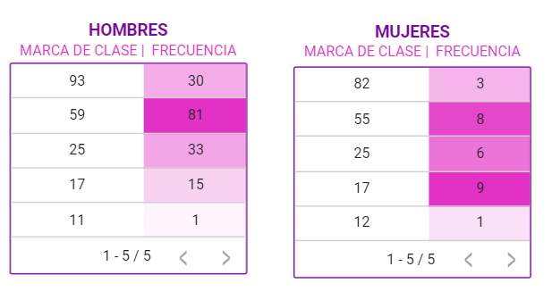

INTRODUCCION A LA INGENIERIA DE SISTEMAS
John Angello Ferrer Avila - CDE: 200199120
INTRODUCCION A LA INGENIERIA DE SISTEMAS
John Angello Ferrer Avila - CDE: 200199120
Accede a la base de datos:
Accede al looker studio
ANÁLISIS CASOS DE SUICIDIO EN NEIVA
Por Genero, Identifique el rango de edad con mas casos de suicidios registrados en el municipio de Neiva durante 2004 y 2022. ¿Cuales son los mecanismos de muerte más comunes?
SQL
La estadística revela, en primera instancia, que la población mas vulnerable son hombres menores de 59 años y mayores que 25, es decir, hombres adultos. En el caso femenino, la población mas vulnerable son adolescentes entre los 12 y los 17 años.
En comparativa, los casos de suicidios son desiguales en relacion al genero de la victima. Para la mayoría de intérvalos, el número de hombres es aproximadamente 10 veces mayor que el número de mujeres.
En
base a los casos registrados. La modalidad de suicidio más habitual es el
ahorcamiento, siendo el mecanismo aplicado alrededor del 77% de los casos. En
segundo lugar, la intoxicación, mas ésta representa poco más del 10%
Accede a la base de datos:
ANÁLISIS CASOS DE SUICIDIO EN NEIVA
Accede al looker studio
Por Genero, Identifique el rango de edad con mas casos de suicidios registrados en el municipio de Neiva durante 2004 y 2022. ¿Cuales son los mecanismos de muerte más comunes?
SELECT
MAX (EDAD) AS edad_representante, COUNT(Edad) AS Rango_Edad
FROM `act4intro.general.datos`
WHERE EDAD <= 12
UNION
ALL
SELECT
MAX (Edad) AS edad_representante, COUNT (Edad) AS Rango_edad
FROM `act4intro.general.datos`
WHERE EDAD > 12 AND EDAD <= 17
UNION
ALL
SELECT
MAX (Edad) AS edad_representante, COUNT (Edad) AS Rango_edad
FROM `act4intro.general.datos`
WHERE EDAD > 17 AND EDAD <= 25
UNION
ALL
SELECT
MAX (Edad) AS edad_representante, COUNT (Edad) AS Rango_edad
FROM `act4intro.general.datos`
WHERE EDAD > 25 AND EDAD <= 59
UNION
ALL
SELECT
MAX (Edad) AS edad_representante, COUNT (Edad) AS Rango_edad
FROM `act4intro.general.datos`
WHERE EDAD > 59
ORDER
BY edad_representante DESC
SELECT Mecanismo_Muerte, COUNT (Mecanismo_Muerte) AS Conteo FROM `act4intro.general.datos` GROUP BY Mecanismo_Muerte ORDER BY Conteo DESC
created with
Website Builder .